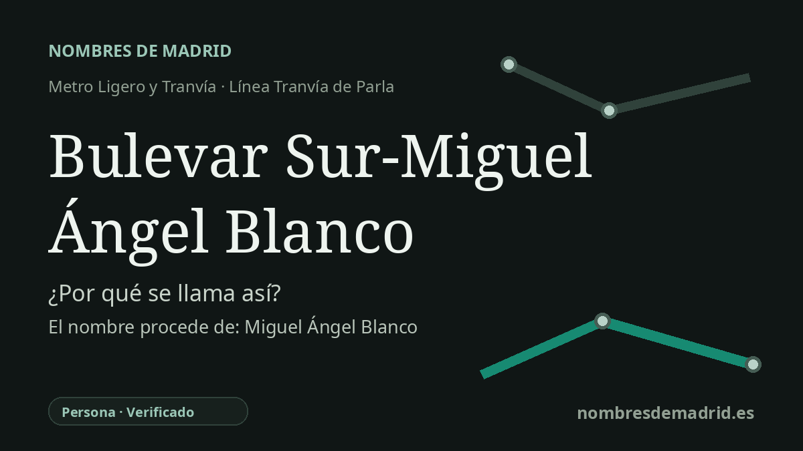

Publicado el · Investigación de Nombres de Madrid · Cómo verificamos cada origen · 7 fuentes consultadas
Respuesta rápida
La parada toma su nombre combinado del Bulevar Sur de Parla y de Miguel Ángel Blanco Garrido, concejal del PP en Ermua secuestrado y asesinado por ETA en julio de 1997. Parla dio su nombre al bulevar en 2019 y la parada del tranvía adoptó la denominación conmemorativa en marzo de 2022.
La historia del nombre
El nombre de esta parada tiene dos capas. La parte más antigua, Bulevar Sur, señala el bulevar meridional de Parla, un eje urbano central servido por el Tranvía de Parla. La dedicación añadida, Miguel Ángel Blanco, recuerda a Miguel Ángel Blanco Garrido, el joven concejal de Ermua cuyo secuestro y asesinato por ETA en julio de 1997 se convirtió en un hito de la reacción cívica española contra el terrorismo.
Miguel Ángel Blanco nació en Ermua en 1968 y fue concejal del Partido Popular en ese municipio vasco. El 10 de julio de 1997 ETA lo secuestró y lanzó un ultimátum de 48 horas exigiendo el traslado de los presos de ETA a cárceles del País Vasco. La exigencia se dirigía al Gobierno español, pero el impacto fue nacional: vigilias, concentraciones silenciosas, manos blancas, lazos azules y manifestaciones multitudinarias se extendieron por España mientras se acercaba el plazo.
Al expirar el ultimátum el 12 de julio de 1997, Blanco fue llevado a una zona rural próxima a Lasarte y tiroteado. Fue encontrado aún con vida y trasladado al hospital, pero falleció en la madrugada del 13 de julio. La reacción ante el crimen pasó a conocerse como el Espíritu de Ermua, expresión asociada a la amplia movilización ciudadana que plantó cara a la violencia de ETA y cambió el clima público frente al terrorismo en España.
El nombre en Parla no es solo un homenaje genérico añadido a un plano de transporte. En enero de 2019 el pleno municipal aprobó denominar Bulevar Miguel Ángel Blanco al tramo del antiguo Bulevar Sur situado entre la Travesía Severo Ochoa y la glorieta de la Comisaría de Policía. Después, el 22 de marzo de 2022, Tranvía de Parla anunció que la parada situada en ese bulevar también llevaría el nombre, dando lugar a la denominación combinada que aparece en horarios del operador: Bulevar Sur - M.A. Blanco.
Hay un pequeño matiz documental: algunas páginas de transporte siguen mostrando la parada simplemente como Bulevar Sur, mientras que el aviso de Tranvía de Parla de 2022 y horarios actuales incorporan la dedicación a Miguel Ángel Blanco. La lectura mejor respaldada es, por tanto, que la parada se llamó originalmente Bulevar Sur y recibió después el añadido conmemorativo tras la asignación municipal del nombre al bulevar.